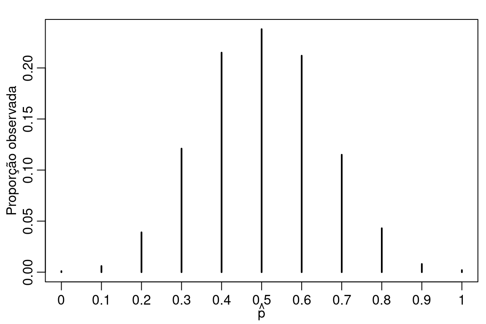
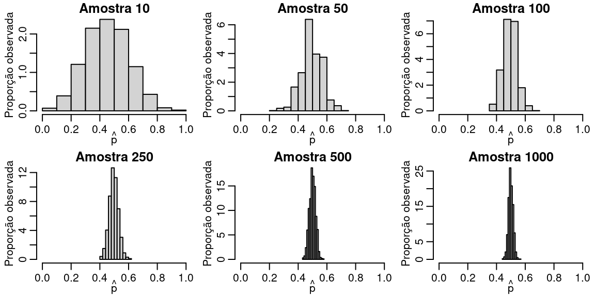
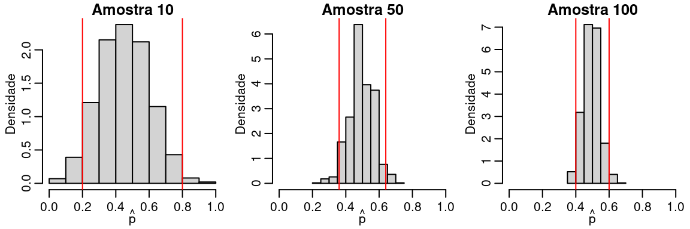
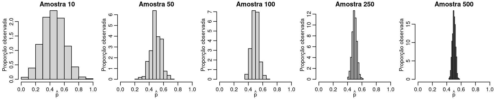

8 Inferência estatística
8.1 Introdução ao pensamento estatístico
No contexto de análise e modelagem estatística o analista assume que todos os fenômenos aleatórios podem ser representados por distribuições de probabilidades, ou seja, um modelo estatístico. Tais distribuições são representações de como a variável aleatória deve se comportar na população. Em cursos de inferência estatística é usual a frase ‘’seja X uma variável aleatória de uma população normal com média \(\mu\) e variância \(\sigma^2\)’’. Essa frase exemplifica a forma como o estatístico supõe que um certo fenômeno aleatório se comporta na população.
Considere o caso de uma pesquisa eleitoral onde potenciais eleitores são entrevistados sobre a sua intenção em votar (SUCESSO) ou não votar (FRACASSO) em um determinado candidato X. Note que pela estrutura do fenômeno aleatório o modelo Bernoulli é um candidato natural para modelar o comportamento da variável aleatória ‘’intenção de voto’’. Suponha ainda que um conjunto de \(n\) eleitores vão ser entrevistados e que a probabilidade de sucesso, ou seja, votar no candidato X seja constante para todos os entrevistados e denotada por \(p.\) Nestas condições podemos estar interessados na variável aleatória Y que conta o número de sucessos (eleitores que vão votar em X) entre \(n\) eleitores. Sendo assim, a distribuição de probabilidade de \(Y\) é binomial com parâmetros \(n\) e \(p\) e sua função de probabilidade é dada por
\[ P(Y = y) = P(Y = y) = \binom{n}{y} p^y (1-p)^{n-y}. \] Note que esta distribuição é completamente governada pelos valores de seus parâmetros, ou seja, \(n\) e \(p\). Em geral \(n\) é fixado e conhecido, por outro lado \(p\) é desconhecido. Em termos práticos, o valor de \(p\) é o que estamos interessados, uma vez que ele representa a proporção populacional de eleitores do candidato \(X\).
Se fossemos capazes de entrevistar todos os elementos da população de interesse, poderíamos facilmente calcular a proporção de eleitores de \(X\) e plugar no modelo para calcular quaisquer tipos de probabilidades de interesse. No entanto na prática, muitas vezes entrevistar todos os elementos da população de interesse é impossível ou extremamente custoso. Nestas situações o problema que surge é como que baseado apenas em uma amostra da população de interesse podemos falar algo sobre toda a população. Este é o problema de uma das áreas da estatística chamada de inferência estatística.
O objetivo deste texto não é discutir inferência estatística em detalhes, mas apenas apresentar as principais ideias e ilustrar a sua implementação computacional utilizando o software R. Além disso, uma série de procedimentos pré-prontos estão disponíveis em R e devem ser apresentados de forma breve, uma vez que as ideias são similares apenas adaptadas à situações específicas.
O processo de inferência estatística começa com a especificação de uma distribuição de probabilidade para a variável aleatória de interesse. Neste caso, vamos definir a variável de interesse como sendo \(Y\) - votar no candidato X. Note que esta é uma v.a binária, ou seja, apresenta apenas os valores \(0\)-não vai votar no candidato X ou \(1\) vai votar no candidato X. Neste caso, podemos especificar que \(Y \sim B(p)\), ou seja, \(Y\) segue o modelo de Bernoulli com parâmetro \(p\). Importante lembrar que o espaço paramétrico de \(p\) neste caso é o intervalo unitário, ou seja, \(p \in (0,1)\).
Uma vez com o modelo especificado precisamos de informações sobre o parâmetro populacional de interesse, neste caso \(p\) que representa a proporção de eleitores do candidato X. Para obter informações sobre \(p\) vamos coletar uma amostra da população de interesse e medir a variável de interesse. Neste caso, isso significa simplesmente perguntar se o eleitor vai ou não votar no candidato X. Em R podemos facilmente simular esta situação prática usando a função \(rbinom()\), conforme ilustra o código abaixo
set.seed(123)
y <- rbinom(n = 10, size = 1, prob = 0.5)
y
[1] 0 1 0 1 1 0 1 1 1 0Note que para simular uma amostra nós precisamos especificar o tamanho da amostra, neste caso \(n=10\) o número de ensaios Bernoulli neste caso apenas \(1\) e a probabilidade de sucesso (proporção populacional). É claro que na prática a proporção populacional é desconhecida, mas neste caso fixamos um valor para simular observações e o objetivo é apenas baseado nas realizações da variável aleatória descobrir ou inferir qual é o verdadeiro valor de \(p\). De forma mais geral os objetivos da inferência estatística são:
- Estimar \(p\) baseado apenas na amostra (valor pontual)! Pense que deseja-se responder a pergunta: Quanto você acha que é a proporção de eleitores do candidato X na população?
- Informar o quanto você acredita no valor estimado (intervalo de confiança).
- Decidir sobre possíveis valores de p baseado apenas na amostra. Por exemplo, O candidato X vai ganhar (p > 0,50)?
Interessante notar que até este momento não fizemos nenhuma suposição em como as observações foram obtidas. No entanto, se supomos que as observações são independentes podemos facilmente obter a distribuição conjunta de todas as variáveis aleatórias envolvidas no modelo como o produto da distribuição de cada uma. Neste caso, todas as observações vêm de uma população Bernoulli com parâmetro \(p\). Assim, a distribuição conjunta é dada pelo seguinte produtório
\[ P(Y = y) = \prod_{i=1}^{n} p^{y_i} (1-p)^{1-y_i} = p^{\sum_{i=1}^n y_i} (1-p)^{n - \sum_{i=1}^n y_i}. \] Uma forma alternativa é escrever a distribuição do número de sucessos em \(n\) ensaios Bernoulli que é simplesmente uma distribuição binomial com parâmetros \(n\) e \(p\), ou seja,
\[ P(Y = y) = P(Y = y) = \binom{n}{y} p^y (1-p)^{n-y}. \] É importante enfatizar que após a amostra ser coletada o número \(y\) de sucesso é fixo. Para a nossa amostra, temos \(y = 6\). Lembre-se que o \(n\) foi fixado, assim para avaliar a equação acima em algum ponto, só precisamos fixar o valor de \(p\).
Agora vamos refletir sobre o que a equação acima está nos fornecendo. Suponha que em um primeiro momento você apenas precise decidir se \(p = 0.5\) ou \(p = 0.8\). Como poderíamos usar o nosso modelo para tomar esta decisão?
Note que podemos calcular qual é a probabilidade de obter \(6\) sucessos em \(n\) ensaios supondo que \(p = 0.5\) e também supondo que \(p = 0.8\). Vamos fazer estas contas
\[ P(Y = 6 | p = 0.5) = \binom{10}{6} 0.5^6 (1-0.5)^{10-6} = 0.205. \] \[ P(Y = 6 | p = 0.8) = \binom{10}{6} 0.8^6 (1-0.8)^{10-6} = 0.088. \] Em R temos,
dbinom(6, size = 10, prob = 0.5)
[1] 0.2050781
dbinom(6, size = 10, prob = 0.8)
[1] 0.08808038Baseado apenas nestas probabilidades, é possível observar que a probabilidade de observarmos \(6\) sucessos em \(10\) ensaios é mais provável quando \(p = 0.5\) do que quando \(p = 0.8\). Neste caso podemos concluir que existe mais evidências em favor de \(p=0.5\) do que em favor de \(p = 0.8\). Veja que fizemos uma espécie de pensamento inverso, observamos \(6\) sucessos e agora estamos pensando, qual é o valor de \(p\) mais compatível com esse valor. Além disso, a função de probabilidade conjunta vista como uma função do parâmetro ao invés da variável aleatória nos fornece exatamente essa noção de compatibilidade, ou seja, qual é o valor de \(p\) mais compatível com as minhas observações.
Para enfatizar esta idéia vamos rescrever a função acima para enfatizar que a quantidade desconhecida agora é \(p\) e não mais \(y\).
\[ L(p|y) = \binom{n}{y} p^y (1-p)^{n-y}. \] A função acima é chamada de verossimilhança e é fundamental em todo o processo de inferência estatística. No caso de variáveis aleatórias discretas ela nos fornece a probabilidade de observar o que realmente foi observado dado um particular valor para o parâmetro de interesse. Particularizando para o nosso exemplo temos
\[ L(p|y) = \binom{10}{6} p^6 (1-p)^{10-6}. \] Como dito a função de verossimilhança nos fornece uma medida de compatibilidade de um particular valor de \(p\) com a amostra observada. Assim, é natural tomarmos como o nosso melhor ‘’chute’’ o valor mais compatível com a amostra observada, ou seja, o ponto de máximo da função de verossimilhança. Vamos fazer um gráfico para ilustrar esta ideia.
L <- function(p, n, y) {
out <- dbinom(y, size = n, prob = p)
return(out)
}
curve(L(x, n = 10, y = 6), 0, 1) Na prática é mais comum trabalhar com o log da verossimilhança por conveniência computacional. Isso leva a chamada função de log-verossimilhança, cujo gráfico é apresentado abaixo para o nosso exemplo
Na prática é mais comum trabalhar com o log da verossimilhança por conveniência computacional. Isso leva a chamada função de log-verossimilhança, cujo gráfico é apresentado abaixo para o nosso exemplo
ll <- function(p, n, y) {
out <- dbinom(y, size = n, prob = p, log = TRUE)
return(out)
}
curve(ll(x, n = 10, y = 6), 0.4, 0.8)
abline(v = mean(y)) Não é dificil mostrar usando ferramentas padrões de cálculo diferencial que o ponto de máximo ocorre em \(\hat{p} = y/n\), ou seja, na proporção amostral de eleitores do candidato X.
Não é dificil mostrar usando ferramentas padrões de cálculo diferencial que o ponto de máximo ocorre em \(\hat{p} = y/n\), ou seja, na proporção amostral de eleitores do candidato X.
Com essa ideia simples resolvemos o primeiro objetivo da inferência estatística que consiste em dizer qual valor achamos razoável para \(p\) dado a amostra que coletamos. O próximo objetivo é dizer o quanto acreditamos neste valor. Note que uma vez que temos a função de verossimilhança ou log-verossmilhança basta olhar para a função para responder a tal pergunta. O ponto de máximo é o mais compatível, porém valores ao redor do máximo também apresentam uma boa compatibilidade com a amostra e portanto são bons candidatos a valor de \(p\). Essa ideia pode ser resumida por fazer um corte horizontal na função de log-verossimilhança. Assim, todos os pontos acima do corte são bons candidatos a verdadeiro valor de \(p\).
curve(ll(x, n = 10, y = 6), 0.4, 0.8)
abline(h = -2)Entretanto, onde fazer tal corte não é uma tarefa simples e explicar como e por que fazer isso em detalhes está fora do escopo deste material. Esta é a ideia por traz da definição do que se chama popularmente de intervalo de confiança. Uma forma alternativa é fazer um gráfico da função de verossimilhança relativa, definida como a verossimilhança divida pela verossimilhança no ponto de máximo, \[ LR(p) = L(p)/L(\hat{p}). \]
Neste caso um intervalo pode ser obtido por definir algum valor entre \(0\) e \(1\) para obter intervalos não vazios. Por exemplo, podemos definir que uma compatibilidade de pelo menos 0.4 com a amostra é necessário para que um valor seja parte do intervalo. Ilustrando graficamente temos,
LR <- function(p, p_hat, n, y) {
out <- L(p = p, n = n, y = y)/L(p = p_hat, n = n, y = y)
return(out)
}
curve(LR(x, p_hat = 0.6, n = 10, y = 6), 0, 1)
abline(h = 0.4)Por fim, o último objetivo da inferência consiste em decidir se um determinado valor hipotético para \(p\) é ou não compatível com a amostra observada. Note que o valor mais compatível é o máximo da verossimilhança, assim para decidir se um valor é ou não compatível com a amostra, basta verificar se ele está perto ou longe do valor que tem maior compatibilidade. Esta ideia é o que esta por traz do que se chama de teste de hipóteses e é ilustrada abaixo.
8.2 Estimação pontual e intervalos de confiança
O processo de estimação pontual consiste em encontrar um valor ao qual chamamos de estimativa do verdadeiro valor do parâmetro, em nosso exemplo o parâmetro \(p\) da distribuição Bernoulli. Como discutido anteriormente a função de verossimilhança nos fornece uma forma intuitiva de obter tal valor que no caso da distribuição de Bernoulli é simplesmente a proporção amostral, \(\hat{p} = y/n\).
O próximo passo é encontrar um intervalo de confiança para o parâmetro \(p\). Neste texto vamos enfatizar o pensamento frequentista de probabilidade para motivar a construção do intervalo de confiança.
Importante salientar que \(Y\) é uma variável aleatória cuja observações são denotadas por \(y\). Nossa estimativa de \(p\) é o valor \(\hat{p} = y/n\) que é uma função dos valores observados. Agora suponha que o experimento seja refeito um número grande vezes. O que vai acontecer com \(\hat{p}\)? Vamos fazer um experimento computacional para ilustrar esta situação.
set.seed(1234)
p.hat <- c()
for(i in 1:1000) {
y <- rbinom(10, prob = 0.5, size = 1)
p.hat[i] <- mean(y)
}par(mfrow = c(1,1), mar=c(2.6, 2.8, 1.2, 0.5), mgp = c(1.6, 0.6, 0))
plot(prop.table(table(p.hat)), main = "",
ylab = "Proporção observada",
xlab = expression(hat(p)), xlim = c(0,1))A Figura acima mostra que mesmo o verdadeiro valor de \(p\) sendo 0.5 existe uma probabilidade razoável de observarmos \(\hat{p} = 0.4\) e \(\hat{p} = 0.6\) em uma amostra de tamanho 10. Porém, quando nos distanciamos de \(0.5\) a probabilidade de observar \(\hat{p}\) mais extremos como 0.1 ou 0.9 é pequena. No geral, a incerteza com relação ao valor de \(p\) é grande. Para diminuir tal incerteza precisamos ganhar mais informações sobre o valor de \(p\) e para isso precisamos de mais amostras.
Note que para cada possível amostra coletada o valor de \(\hat{p}\) é alterado. Isso é decorrente de \(\hat{p}\) ser também uma função da variável aleatória \(Y\). Para enfatizar isso usamos a notação \(\hat{p} = Y/n\) e neste caso chamamos \(\hat{p}\) de estimador do valor de \(p\). Pensando desta forma \(\hat{p}\) é também uma variável aleatória e consequentemente ele deve ter uma distribuição de probabilidade que pode ser resumida, por exemplo, usando esperança e variância.
A Figura abaixo mostra o efeito do tamanho da amostra sobre a distribuição amostral do estimador \(\hat{p}\).
set.seed(1234)
p.hat.list <- list()
amostra <- c(10, 50, 100, 250,500, 1000)
par(mfrow = c(2,3), mar=c(2.6, 2.8, 1.2, 0.5), mgp = c(1.6, 0.6, 0))
for(j in 1:6) {
p.hat.list[[j]] <- matrix(NA, ncol = 1, nrow = 1000)
for(i in 1:1000) {
y <- rbinom(amostra[j], prob = 0.5, size = 1)
p.hat.list[[j]][i,] <- mean(y)
}
hist(p.hat.list[[j]], prob = TRUE, main = paste("Amostra", amostra[j]),
ylab = "Proporção observada",
xlab = expression(hat(p)), xlim = c(0,1))
}
Note que quanto maior a amostra a distribuição amostral fica mais concentrada ao redor do verdadeiro valor de \(p\). Isso é decorrente da Lei dos grandes números. Além disso, note que a distribuição é muito parecida com a distribuição normal, um resultado conhecido como Teorema Central do Limite.
A idéia de intervalo de confiança é simplesmente olhar para a distribuição amostral e responder a pergunta: Qual o intervalo em que \(\hat{p}\) tem uma probabilidade, digamos \((1-\alpha)\) de pertencer?
O valor de \(\alpha\) deve ser especificado e alguns valores populares são \(0.05\) e \(0.01\). A Figura abaixo ilustra esta ideia.
set.seed(1234)
p.hat.list <- list()
amostra <- c(10, 50, 100)
par(mfrow = c(1,3), mar=c(2.6, 2.8, 1.2, 0.5), mgp = c(1.6, 0.6, 0))
for(j in 1:3) {
p.hat.list[[j]] <- matrix(NA, ncol = 1, nrow = 1000)
for(i in 1:1000) {
y <- rbinom(amostra[j], prob = 0.5, size = 1)
p.hat.list[[j]][i,] <- mean(y)
}
hist(p.hat.list[[j]], prob = TRUE, main = paste("Amostra", amostra[j]),
ylab = "Densidade",
xlab = expression(hat(p)), xlim = c(0,1))
abline(v= c(quantile(p.hat.list[[j]], probs = c(0.025, 0.975))), col = "red")
}
Temos um procedimento bastante simples para obter os limites do intervalo de confiança, porém tal procedimento depende de sermos capazes de realizar o experimento um número grande de vezes. Na prática só temos uma amostra coletada e baseado apenas nesta amostra precisamos inferir sobre \(p\). É neste ponto que entra o fato de \(\hat{p}\) ser uma variável aleatória. Este fato permite que exploremos sua distribuição mesmo sem realizar um grande número de experimentos.
De forma geral obter a distribuição de probabilidade de um estimador não é uma tarefa trivial, porém o Teorema Central do Limite nos fornece uma boa aproximação, ao menos para grandes amostras. O Teorema Central do limite em sua versão mais simples é como segue:
- Teorema Lindeberg-Levy: Seja \(Y_1, \ldots, Y_n\) uma amostra iid com \(E(Y_i) = \mu\) e \(V(Y_i) = \sigma^2 < \infty\). Então, \[ \sqrt{n}\left ( \frac{\bar{Y} - \mu}{\sigma} \right ) \overset{D}{\to} Z \sim N(0,1), \quad \text{para} \quad n \to \infty.\]
- Isso significa que, para todo \(y \in \Re\), \[ P(Y_n \leq y) \to \Phi (y) \quad \text{quando} \quad n \to \infty,\] onde \[ \Phi(y) = \int_{-\infty}^y \phi(z) dz \quad \text{e} \quad \phi(z) = \frac{1}{\sqrt{2\pi}} \exp \left ( -\frac{1}{2} z^2 \right ).\]
- Forma alternativa: \(\bar{Y} \sim N(\mu, \sigma^2/n).\)
Particularizando para o nosso exemplo temos que:
- Estimador de máxima verossimilhança \(\hat{p} = \frac{Y}{n}.\)
- Usando as propriedades da distribuição binomial, temos \[E(\hat{p}) = E(Y/n) = \frac{1}{n}E(Y) = \frac{np}{n} = p.\] \[Var(\hat{p}) = Var(Y/n) = \frac{1}{n^2}Var(Y) = \frac{np(1-p)}{n^2} = \frac{p(1-p)}{n}.\]
- Usando o TLC, temos \[\hat{p} \sim N(p, \frac{p(1-p)}{n}).\]
Vamos fazer uma ilustração computacional deste importante resultado.
set.seed(1234)
p.hat.list <- list()
amostra <- c(10, 50, 100, 250, 500, 1000)
par(mfrow = c(2,3), mar=c(2.6, 2.8, 1.2, 0.5), mgp = c(1.6, 0.6, 0))
for(j in 1:6) {
p.hat.list[[j]] <- matrix(NA, ncol = 1, nrow = 1000)
for(i in 1:1000) {
y <- rbinom(amostra[j], prob = 0.5, size = 1)
p.hat.list[[j]][i,] <- mean(y)
}
hist(p.hat.list[[j]], prob = TRUE, main = paste("Amostra", amostra[j]),
ylab = "Densidade", xlab = expression(hat(p)), xlim = c(0,1))
curve(dnorm(x, mean = 0.5, sd = sqrt(0.5*(1-0.5)/amostra[j])), 0.1, 0.9, add = TRUE)
}
Agora usando resultados convencionais da distribuição normal podemos encontrar os limites do intervalo de confiança. Para o caso binomial o intervalo é dado por \[\hat{p} \pm Z_{\alpha/2} \sqrt{\frac{\hat{p}(1-\hat{p})}{n}},\] onde \(Z_{\alpha/2}\) é o quantil da distribuição normal padrão com \(\alpha/2\) probabilidade.
Cálculos similares mostram que para os casos da média de uma distribuição normal e Poisson os intervalos ficam dados por:
Intervalo de confiança: Caso Normal \[\hat{\mu} \pm Z_{\alpha/2} \sqrt{\frac{\hat{\sigma}^2}{n}},\] onde \(\hat{\sigma}^2 = \sum_{i=1}^n \frac{(y_i - \hat{\mu})^2}{n-1}\).
Intervalo de confiança: Caso Poisson \[\hat{\lambda} \pm Z_{\alpha/2} \sqrt{\frac{\hat{\lambda}}{n}},\] onde \(\hat{\lambda} = \sum_{i=1}^n \frac{y_i}{n}.\)
O intervalo de confiança deve ser interpretado sempre com muito cuidado. A interpretação frequentista é a seguinte: Se o experimento for repetido um número \(n\) de vezes e para cada realização obtermos o intervalo de confiança, esperamos que \((1-\alpha)\%\) dos intervalos contenham o verdadeiro valor do parâmetro. Note que a variável aleatória é o próprio intervalo de confiança.
O código abaixo ilustra computacionalmente tal interpretação.
set.seed(12)
results_wald <- matrix(NA, ncol = 2, nrow = 100)
for(i in 1:100) {
y <- rbinom(100, size = 1, prob = 0.5)
p_hat <- mean(y)
v_hat <- (p_hat*(1-p_hat))/100
temp_wald <- c(p_hat - qnorm(0.975)*sqrt(v_hat), p_hat + qnorm(0.975)*sqrt(v_hat))
results_wald[i,] <- temp_wald
}
## Intervalo Wald
plot(c(0.30,0.72) ~ c(1,100), type = "n", ylab = expression(p), xlab = "Ensaio")
abline(h=0.50)
for(i in 1:100) {
arrows(c(i),results_wald[i,1],c(i),results_wald[i,2],code=3,angle=90,length=0.03,
col=ifelse(results_wald[i,1] > 0.5 | results_wald[i,2] < 0.5, "darkred","lightgray"))
}
Exemplo 1 No caso do candidato X suponha que é de interesse apresentar uma estimativa intervalar para a proporção de eleitores de X na população. Assumindo que a estimativa amostral foi de \(0,60\) (seis sucessos em dez ensaios) o intervalo com \(95\%\) de confiança é dado por \[ \hat{p}_I = 0,6 - 1.96\sqrt{0,6(1-0,6)/10} = 0.296 \quad \text{e} \quad \hat{p}_S = 0,6 - 1.96\sqrt{0,6(1-0,6)/10} = 0.904. \]
Exemplo 2 Num grupo de pacientes, o nível de colesterol é uma variável aleatória com distribuição Normal, de média desconhecida e variância \(64 (mg/ml)^2\). - Para uma amostra de 46 indivíduos que forneceu nível médio de colesterol de 120 \(mg/ml\), construa o intervalo de confiança de \(88\%\).
media <- 120
sd <- sqrt(64)
n <- 46
alpha = 0.12
mu_I <- media - qnorm((1 - alpha/2))*sd/sqrt(46)
mu_S <- media + qnorm((1 - alpha/2))*sd/sqrt(46)
c(mu_I, mu_S)
[1] 118.1661 121.8339Exercícios
Por analogia a produtos similares, o tempo de reação de um novo medicamento pode ser considerado como tendo distribuição Normal com desvio padrão igual a 2 minutos (a média desconhecida). Vinte pacientes foram sorteados, receberam o medicamento e tiveram seu tempo de reação anotado. Os dados foram os seguintes (em minutos): \(2,9; 3,4; 3,5; 4,1; 4,6; 4,7; 4,5; 3,8; 5,3; 4,9; 4,8; 5,7; 5,8; 5,0; 3,4; 5,9; 6,3; 4,6; 5,5\) e \(6,2\). Obtenha um intervalo de confiança para o tempo médio de reação. Use \(96\%\) de confiança.
Uma amostra de 25 observações de uma Normal \((\mu, 16)\) foi coletada e forneceu uma média amostral de 8. Construa intervalos de confiança com \(80\%\), \(85\%\), \(90\%\) e \(95\%\) de confiança. Comente as diferenças encontradas.
Numa pesquisa com 50 eleitores, o candidato José João obteve \(0,34\) da preferência dos eleitores. Construa, para a confiança de \(94\%\) o intervalo de confiança para a proporção de votos a serem recebidos pelo candidato mencionado.
Considere a seguinte amostra da distribuição de Poisson de parâmetro \(\lambda\). Proponha um estimador pontual e intervalar para \(\lambda\) usando o método de máxima verossimilhança. Implemente seu método em R. Faça um estudo de simulação para ilustrar a distribuição aproximada deste estimador.
O número de atendimentos em um pronto-socorro pode ser modelado por uma distribuição de Poisson de parâmetro \(\lambda\). Suponha que o interesse seja modelar o número de atendimentos por hora e que para um conjunto de \(30\) horas o número de atendimentos por hora foi contado e as observações são mostradas abaixo.
# A tibble: 3 × 1
`matrix(y, 3, 10)`[,1] [,2] [,3] [,4] [,5] [,6] [,7] [,8] [,9] [,10]
<int> <int> <int> <int> <int> <int> <int> <int> <int> <int>
1 6 11 8 8 9 12 7 9 9 9
2 10 13 12 13 8 6 13 9 9 6
3 7 4 8 8 5 3 12 16 8 5O seu interesse é dimensionar o número de médicos para este pronto socorro. Suponha que um médico consegue atender até quatro pessoas em um período de uma hora. A politica do hospital especifica que se deve manter um contigente de médicos necessários para atender a demanda em \(95\%\) dos dias. Especifique quantos médicos devem estar de plantão para que a politica do hospital seja respeitada.
8.3 Teste de hipótese
O último objetivo da inferência estatística é a construção de testes de hipóteses. Uma hipótese é qualquer afirmativa sobre uma propriedade da população. Um teste de hipótese é um procedimento para avaliar uma afirmativa sobre uma propriedade da população. Em termos estatísticos uma hipótese estatística é qualquer afirmativa sobre um parâmetro da distribuição de probabilidade.
Voltando ao nosso exemplo do candidato X, podemos estar interessados por exemplo em saber se a proporção de votos no candidato X é maior que 0.5, o que implicaria que ele ganharia a eleição. Em termos de distribuição de probabilidade essa é uma afirmativa acerca do valor do parâmetro \(p\). Sendo assim, enunciamos as hipóteses da seguinte forma:
\[H_0: p = \frac{1}{2} \quad vs \quad H_1: p \neq \frac{1}{2}.\] Nesta notação \(H_0\) é chamada de hipótese nula. Por outro lado, \(H_1\) é chamada de hipótese alternativa.
Para construir um teste de hipótese usamos novamente o pensamento frequentista de probabilidade, ou seja, considere que é possível realizar o experimento um número indefinido de vezes. Para cada uma destas realizações obtemos uma estimativa para o valor de \(p\) digamos \(\hat{p}\). Verique quais valores realizados de \(\hat{p}\) são razoáveis de ocorrer sob a hipótese nula. No caso da hipótese nula ser verdadeira podemos facilmente gerar dados do fenômeno de interesse. Neste caso, vamos realizar o experimento \(1000\) vezes e ver como se comporta nosso estimador.
set.seed(1234)
p.hat <- c()
for(i in 1:1000) {
y <- rbinom(10, prob = 0.5, size = 1)
p.hat[i] <- mean(y)
}
par(mfrow = c(1,1), mar=c(2.6, 2.8, 1.2, 0.5), mgp = c(1.6, 0.6, 0))
plot(prop.table(table(p.hat)), main = "",
ylab = "Proporção observada",
xlab = expression(hat(p)), xlim = c(0,1))
Veja que mesmo a hipótese nula sendo verdadeira existe uma probabilidade não desprezível de observarmos \(8\) eleitores de X em \(10\) eleitores. A incerteza associada a decisão no caso de apenas \(10\) observações é grande. Para diminuir a incerteza precisamos de mais informação o que conseguimos aumentanto a amostra. A Figura abaixo ilustra esta situação
set.seed(1234)
p.hat.list <- list()
amostra <- c(10, 50, 100, 250,500)
par(mfrow = c(1,5), mar=c(2.6, 2.8, 1.2, 0.5), mgp = c(1.6, 0.6, 0))
for(j in 1:5) {
p.hat.list[[j]] <- matrix(NA, ncol = 1, nrow = 1000)
for(i in 1:1000) {
y <- rbinom(amostra[j], prob = 0.5, size = 1)
p.hat.list[[j]][i,] <- mean(y)
}
hist(p.hat.list[[j]], prob = TRUE, main = paste("Amostra", amostra[j]),
ylab = "Proporção observada",
xlab = expression(hat(p)), xlim = c(0,1))
}
O procedimento é bastante intuivo e parecido com a construção de intervalos de confiança. No entanto, no caso de teste de hipóteses precisamos tomar uma decisão. Sendo assim, a ideia é construir uma região de valores para os quais você aceitará (ou não rejeitará) a hipótese nula esta região é chamada de região de aceitação ou não rejeição de \(H_0\). A Figura abaixo ilustra a construção da região de rejeição
set.seed(1234)
p.hat.list <- list()
amostra <- c(10, 50, 100, 250,500)
par(mfrow = c(1,5), mar=c(2.6, 2.8, 1.2, 0.5), mgp = c(1.6, 0.6, 0))
for(j in 1:5) {
p.hat.list[[j]] <- matrix(NA, ncol = 1, nrow = 1000)
for(i in 1:1000) {
y <- rbinom(amostra[j], prob = 0.5, size = 1)
p.hat.list[[j]][i,] <- mean(y)
}
hist(p.hat.list[[j]], prob = TRUE, main = paste("Amostra", amostra[j]),
ylab = "Proporção observada",
xlab = expression(hat(p)), xlim = c(0,1))
abline(v= c(quantile(p.hat.list[[j]], probs = c(0.025, 0.975))), col = "red")
}
Novamente em termos práticos não temos como repetir o experimento um número grande vezes. Assim, recorremos novamente ao Teorema Central do Limite e estabelecemos a região critica de forma aproximada usando a aproximação Gaussiana. No caso Bernoulli, este procedimento resulta na seguinte estatística de teste
- Estatística do teste caso Bernoulli
\[ Z = \frac{\hat{p} - p_0}{\sqrt{\frac{p_0(1-p_0)}{n}}} \sim N(0,1). \]
O procedimento aqui descrito em linhas gerais é bastante genérico e perfaz toda a estatística. No entanto está fora do escopo deste material discutir tais procedimentos em detalhes. Na sequência apresentamos o resumo de alguns casos notáveis de testes de hipóteses que aparecem com frequência em cursos de estatística básica.
Exemplo 1 Considere que seja de interesse verificar se existe evidências que o candidato \(X\) vai ganhar as eleições. Em termos estatístico isso significa que
- \(H_0: p = 0.5\) contra \(H_1:p > 0.5.\)
Suponha que adotamos \(5\%\) de significância. Neste caso a região crítica é unilateral, e tem a seguinte forma \[p_c = 0.5 + 1.64\sqrt{0.25/10} = 0.76.\] Vamos fazer um gráfico da região de aceitação e rejeição e verificar onde a proporção amostral está localizada para concluir o teste.
curve(dnorm(x, mean = 0.5, sd = sqrt(0.25/10)), 0.1, 0.9,
ylab = "Densidade", xlab = expression(hat(p)))
abline(v = 0.5+qnorm(0.95)*sqrt(0.25/10))
abline(v = 6/10, col = "red", lty = 2, lwd = 2)
Lembre-se que a proporção amostral foi de \(0.6\) em \(10\) entrevistas. Assim, vemos claramente que não temos evidências para rejeitar \(H_0\). Neste caso não temos evidências para dizer que o candidato X irá ganhar a eleição.
- Estatística do teste caso Normal
No caso de população Normal, a estatística de teste para testar \(H_0:\mu = \mu_0\) contra \(H_1: \mu \neq \mu_0\) com variância conhecida \(\sigma^2\) é dada por
\[ \frac{\hat{y} - \mu_0}{\sigma/\sqrt{n}} \sim N(0,1) \] onde \(\mu_0\) é o valor especificado sob a hipótese nula. Neste caso a região crítica para testes bilaterais toma a seguinte forma:
\[ y_I = \mu_0 - Z_{\alpha/2} \sqrt{\sigma^2 / n}\quad \text{e} \quad y_S = \mu_0 + Z_{\alpha/2} \sqrt{\sigma^2 / n}. \]
Exemplo 2 (Magalhães e Lima, pg. 252). Um pesquisador deseja estudar o efeito de certa substância no tempo de reação de seres vivos a um certo tipo de estímulo. Um experimento é desenvolvido com cobaias que são inoculadas com a substância e submetidas a um estimulo elétrico, com seus tempos de reação (em segundos) anotados. Os seguintes valores foram obtidos: \(9,1;\quad 9,3;\quad 7,2;\quad 7,5;\quad 13,3;\quad 10,9;\quad 7,2;\quad 9,9;\quad 8,0;\quad 8,6\). Admite-se que o tempo de reação segue, em geral o modelo Normal com média 8 e desvio padrão \(\sigma = 2\) segundos. O pesquisador desconfia, entretanto, que o tempo médio sofre alteração por influência da substância. Neste caso as hipóteses de interesse são:
- \(H_0:\) as cobais apresentam tempo de reação padrão;
- \(H_1:\) as cobais tem o tempo de reação alterado.
Em termos de modelo estatístico, tais hipóteses são traduzidas para afirmações acerca do parâmetro \(\mu\).
- \(H_0: \mu = 8\) contra \(H_1: \mu \neq 8\).
Neste caso a região crítica para \(\alpha = 0,05\) fica dada por \[y_I = 8 - 1,96\sqrt{4/10} = 6,76 \quad \text{e} \quad y_S = 8 + 1,96 \sqrt{4/10} = 9,24.\] Vamos agora obter a média amostral e concluir o teste.
x <- c(9.1,9.3,7.2,7.5,13.3,10.9,7.2,9.9,8.0,8.6)
mean(x)
[1] 9.1Ilustrando a região crítica
curve(dnorm(x, mean = 8, sd = sqrt(4/10)), 6, 10,
ylab = "Densidade", xlab = expression(hat(y)))
abline(v = c(8-qnorm(0.975)*sqrt(4/10), 8+qnorm(0.975)*sqrt(4/10) ))
abline(v = mean(x), col = "red", lwd = 2, lty = 2)Como o valor observado da média amostral pertence a região de aceitação de \(H_0\), aceitamos a hipóteses \(H_0\) ao nível de significância de \(5\%\). Em outras palavras, concluímos que o tempo de reação das cobais submetidas à substância não é alterado.
8.3.1 Teste t (one sample t-test)
- Teste t (one sample t-test)
- Hipóteses: \(H_0: \mu = \mu_0 \quad \times \quad H_1: \mu \neq \mu_0.\)
- Estatística de teste: \(\frac{\bar{y} - \mu_0}{\hat{\sigma}/\sqrt{n}} \sim t_{n-1}.\)
- Suposições: Para o teste ser exato, precisamos
- \(Y \sim N(\mu, \sigma^2)\) iid.
- \(\hat{\sigma}^2 = \sum_{i=1}^n (y_i - \bar{y})^2/n-1\).
- Podem ser razoavelmente relaxadas para grandes amostras.
- Neste caso a distribuição t não é mais necessária.
- Assintóticamente a estatística tem distribuição Normal padrão.
Exemplo 3: (Magalhães e Lima, pg. 259). Deseja-se investigar se uma certa moléstia que ataca o rim altera o consumo de oxigênio desse orgão. Para indivíduos sadios, admite-se que esse consumo tem distribuição Normal com média 12 \(cm^3/min\). Os valores medidos em cinco pacientes com a moléstia foram: \(14,4;12,9;15,0;13,7;\) e \(13,5\). Qual seria a conclusão, ao nível de 1\(\%\) de significância?
O teste de interesse é
- \(H_0:\) A moléstia não altera a média de consumo renal de oxigênio;
- \(H_1:\) Indivíduos portadores da moléstia têm média alterada.
Passando as hipóteses em termos do nosso modelo
- \(H_0: \mu = 12\) contra \(H_1: \mu \neq 12\).
O R conta com uma função especifica para este teste, conforme mostra o código abaixo.
y <- c(14.4,12.9,15,13.7,13.5)
t.test(x = y, mu = 12)
One Sample t-test
data: y
t = 5.2099, df = 4, p-value = 0.006472
alternative hypothesis: true mean is not equal to 12
95 percent confidence interval:
12.88745 14.91255
sample estimates:
mean of x
13.9 Neste caso rejeitamos \(H_0\) em favor de \(H_1\). Note que a função retorna uma série de informações úteis. Temos o tipo de teste realizado, o valor da estatística \(t\) e os graus de liberdade do teste ao lado do \(p-valor\). A função já apresenta a conclusão do teste e por reporta o intervalo de confiança para a média amostral e a média amostral.
8.3.2 Teste t (independent two sample t-test)
- Teste t duas populações independentes variâncias iguais (independent two sample t-test)
- Hipóteses: \(H_0: \mu_1 = \mu_2 \quad \times \quad H_1: \mu_1 \neq \mu_2.\)
- Estatística de teste: \(\frac{\bar{y}_1 - \bar{y}_2}{s_p \sqrt{\frac{1}{n_1} + \frac{1}{n_2}}} \sim t_{n_1 + n_2-2}.\)
- \(s_p = \sqrt{\frac{(n_1 - 1)s^2_1 + (n_2 - 1)s^2_2}{n_1 + n_2 -2}}\) se variâncias assumidas iguais e tamanhos de amostras diferentes.
Exemplo 4 Digitadores são treinados em uma empresa em duas turmas distintas. Na primeira, denominada Turma J, utiliza-se um métodos japonês de ensino, ao passo que na segunda turma, denominada Turma A, utiliza-se um método alemão. Deseja-se comparar os dois métodos e para tanto, 16 alunos de cada turma foram escolhidos aleatoriamente e uma mesma tarefa foi atribuída a cada um. Ao final do experimento, o tempo gasto na realização da tarefa, para cada aluno, foi anotado. No processo, dois computadores utilizados pelos alunos selecionados da turma J e três da turma A apresentaram problemas que impediram a realização da tarefa; o tamanho da amostra foi assim reduzido para 14 e 13 respectivamente, para as turmas J e A. Os dados são os seguintes:
J <- c(10,13,9,10,14,13,10,15,12,10,9,10,13,14)
A <- c(15,12,18,16,15,17,17,15,16,17,11,17,14,NA)
dplyr::tibble(J,A)
# A tibble: 14 × 2
J A
<dbl> <dbl>
1 10 15
2 13 12
3 9 18
4 10 16
5 14 15
6 13 17
7 10 17
8 15 15
9 12 16
10 10 17
11 9 11
12 10 17
13 13 14
14 14 NAApesar de não conhecidas, as variâncias populacionais são assumidas iguais com base em estudos anteriores. Suponha que o interesse é testar
- \(H_0: \mu_J = \mu_A\) contra \(H_1: \mu_J \neq \mu_A\).
t.test(x = J, y = A, paired = FALSE, var.equal = TRUE)
Two Sample t-test
data: J and A
t = -4.7965, df = 25, p-value = 6.313e-05
alternative hypothesis: true difference in means is not equal to 0
95 percent confidence interval:
-5.450501 -2.175872
sample estimates:
mean of x mean of y
11.57143 15.38462 8.3.3 Teste t variância diferentes
- Teste t duas populações independentes variâncias diferentes (independent two sample t-test)
- Hipóteses: \(H_0: \mu_1 = \mu_2 \quad \times \quad H_1: \mu_1 \neq \mu_2.\)
- Estatística de teste: \(\frac{\bar{y}_1 - \bar{y}_2}{s_{\delta}} \sim t_{df}.\)
- \(s_{\delta} = \sqrt{\frac{s^1}{n_1} + \frac{s^2}{n_2}}\) se variâncias diferentes e tamanhos de amostras diferentes.
- Graus de liberdade \(df = \frac{\left ( \frac{s^2_1}{n_1} + \frac{s^2_2}{n_2} \right )}{\frac{(s^2_1/n_1)^2}{n_1 - 1} + \frac{(s^2_2/n_2)^2}{n_2 - 1}}.\)
Exemplo 5 Considere o exemplo dos digitadores, porém agora sem assumir que as variâncias populacionais são iguais. O teste t neste caso pode ser realizado da seguinte forma:
t.test(x = J, y = A, paired = FALSE, var.equal = FALSE)
Welch Two Sample t-test
data: J and A
t = -4.7967, df = 24.856, p-value = 6.399e-05
alternative hypothesis: true difference in means is not equal to 0
95 percent confidence interval:
-5.450930 -2.175444
sample estimates:
mean of x mean of y
11.57143 15.38462 8.3.4 Teste t pareado
- Teste t duas populações dependentes (paired two sample t-test)
- Hipóteses: \(H_0: \mu_D = 0 \quad \times \quad H_1: \mu_D \neq 0.\)
- Estatística de teste: \(\frac{\bar{y}_D - 0}{\hat{\sigma}_D/\sqrt{n}} \sim t_{n-1}.\)
- Neste caso, \(\mu_D\) e \(\hat{\sigma}_D\) são a média e o desvio-padrão da diferença entre \(y_1\) e \(y_2\).
Exemplo 6 Uma distribuidora de combustíveis deseja verificar se um novo tipo de gasolina é eficaz na revitalização de moteores velhos. Com esse objetivo, seleciona 12 automóveis de um mesmo modelo com mais de 8 anos de uso e, após regulagem de seus motores, verifica o consumo de combustível. Em seguida, o carro é abastecido com o novo tipo de combustível durante 15 semanas, e uma nova aferição do consumo é feita. Defina as variáveis aleatórias \(X_i\) e \(Y_i\) como o rendimento do automóvel \(i\) respectivamente antes e após as 15 semanas. Vemos que \(X_i\) e \(Y_i\) foram medidas em uma mesma unidade amostral e, assim, é razoável assumir que exista alguma dependência entre elas. Os valores observados, em \(km/l\), junto com as diferenças \(D_i = Y_i - X_i\), para os 12 automóveis são apresentados na tabela a seguir.
Apos <- c(11.6,8.8,9.9,9.5,11.6,9.1,10.6,10.8,13.4,10.6,10.5,11.4)
Antes <- c(8.1,7.9,6.8,7.8,7.6,7.9,5.7,8.4,8,9.5,8,6.8)
D <- Apos - Antes
dplyr::tibble(Apos, Antes, D)
# A tibble: 12 × 3
Apos Antes D
<dbl> <dbl> <dbl>
1 11.6 8.1 3.5
2 8.8 7.9 0.9
3 9.9 6.8 3.1
4 9.5 7.8 1.7
5 11.6 7.6 4
6 9.1 7.9 1.2
7 10.6 5.7 4.9
8 10.8 8.4 2.4
9 13.4 8 5.4
10 10.6 9.5 1.1
11 10.5 8 2.5
12 11.4 6.8 4.6Queremos testar as hipóteses - \(H_0:\) \(\mu_D = 0\) (a intervenção não produz efeito) - \(H_1:\) \(\mu_D \neq 0\) (a intervenção produz algum efeito)
t.test(x = Apos, y = Antes, paired = TRUE)
Paired t-test
data: Apos and Antes
t = 6.5396, df = 11, p-value = 4.195e-05
alternative hypothesis: true mean difference is not equal to 0
95 percent confidence interval:
1.951609 3.931724
sample estimates:
mean difference
2.941667 8.3.5 Teste F
- Teste F para igualdade de variâncias.
- Hipóteses: \(H_0: \sigma^2_1 = \sigma^2_2 \quad \times H_1: \sigma^2_1 \neq \sigma^2_2\).
- Estatística de teste: \(F = \frac{s^2_1}{s^2_2} \sim F_{(n_1-1)(n_2-1)}\).
- Suposições \(Y_1 \sim N(\mu_1, \sigma^2_1)\) e \(Y_2 \sim N(\mu_2, \sigma^2_2)\).
- Em geral, este teste é conhecido por ser sensível a suposição de normalidade.
- Se normalidade é duvidosa, use o teste para variâncias diferentes.
- Poder e tamanho do teste podem ser altamente sensíveis a suposições.
- Para grandes amostras o TCL fornece uma opção robusta a não-normalidade.
- Regra do dedão Amostra maior que \(30\) TCL funciona bem!
- Mas cuidado!! depende da situação!!
Exemplo 7 Sabe-se que em uma região do país a altura média é de \(1,68\)m, com variância de \(0,30m^2\). Um pesquisador acredita que a alimentação rotineira em uma cidade litorânea, sendo diferente da região como um todo, contribui para que as pessoas apresentem alturas mais homogêneas, apesar de não alterar a altura média da população da cidade. Para verificar sua suspeita, ele coletou um amostra de 31 pessoas e obteve a seguinte amostra:
y <- c(1.77, 1.72, 2.39, 1.95, 1.69, 1.84, 1.86, 1.57, 1.38, 1.47, 1.94,
1.15, 1.93, 2.18, 1.37, 1.56, 1.28, 1.81, 1.66, 1.99, 2.07, 1.67,
1.40, 1.03, 1.58, 1.99, 1.48, 1.73, 1.44, 1.35, 1.54)Além disso, coletou um conjunto de 20 observações da população geral.
set.seed(123)
x <- rnorm(20, mean = 1.68, sd = 0.30)Realize um teste de hipótese para verificar - \(H_0: \sigma^2 = 0,30\) contra \(H_1: \sigma^2 < 0,30\).
var.test(y, x, alternative = "less")
F test to compare two variances
data: y and x
F = 1.1044, num df = 30, denom df = 19, p-value = 0.5811
alternative hypothesis: true ratio of variances is less than 1
95 percent confidence interval:
0.000000 2.148239
sample estimates:
ratio of variances
1.10436 Exercícios
- Uma empresa de pesquisa de mercado usou uma amostra de indivíduos para avaliar o potencial de compra de determinado produto antes e depois de as pessoas virem um novo comercial de televisão a respeito do produto. As avaliações do potencial de compra basearam-se em uma escala de 0 a 10, e os valores mais altos indicavam maior potencial de compra. A hipótese nula declarava que a avaliação média depois seria igual a avaliação média antes. A rejeição dessa hipótese demonstraria que o comercial melhorou a avaliação do potencial médio de compra. Use \(\alpha = 0,05\) e os dados apresentados abaixo para testar a hipótese e comentar o valor do comercial.
# A tibble: 8 × 3
ind Depois Antes
<int> <dbl> <dbl>
1 1 6 5
2 2 6 4
3 3 7 7
4 4 4 3
5 5 3 5
6 6 9 8
7 7 7 5
8 8 6 6- Os preços por galçao (3,78 litros) de gasolina para carros de aluguel foram amostrados em oito grandes aeroportos. Os dados relativos às empresas de carros de aluguel Hertz e National são apresentados a seguir
# A tibble: 8 × 3
Aero Hertz National
<chr> <dbl> <dbl>
1 "Boston" 1.55 1.56
2 "Chicago" 1.62 1.59
3 " Los Angeles" 1.72 1.78
4 "Miami" 1.65 1.49
5 "Nova York (JFK)" 1.72 1.51
6 "Nova York (La Guardia)" 1.67 1.5
7 "Orange County" 1.68 1.77
8 "Washington" 1.52 1.41Use \(\alpha = 0,05\) para testar a hipótese de que não há diferença entre os preços médios populacionais por galão em relação às duas empresas.
- Na Western University, a média histórica das pontuações nos exames para obtenção de bolsas de estudo correspondente às inscrições feitas por calouros é 900. Presume-se que o desvio padrão histórico da população é \(\sigma = 180\) seja conhecido. Anualmente, o vice-reitor usa uma amostra das inscrições para determinar se a média da pontuação nos exames dos calouros se modificou.
- Estabeleça as hipóteses.
- Qual é a estimação pontual e o intervalo de confiança de \(95\%\) da média populacional nos exames se a seguinte amostra de tamanho 50 for observada.
# A tibble: 10 × 1
`matrix(x, 10, 5)`[,1] [,2] [,3] [,4] [,5]
<dbl> <dbl> <dbl> <dbl> <dbl>
1 799. 1120. 708. 977. 775.
2 859. 965. 861. 847. 863.
3 1181. 972. 715. 1061. 672.
4 913. 920. 769. 1058. 1290.
5 923. 800. 787. 1048. 1117.
6 1209. 1222. 596. 1024. 698.
7 983. 990. 1051. 1000. 827.
8 672. 546. 928. 889. 816.
9 776. 1026. 695. 845. 1040.
10 820. 815. 1126. 832. 885.- Realize um teste de hipótese para verificar a suspeita do vice-reitor. Use \(\alpha = 0,05\). Qual é a sua conclusão?
- Mensalmente o governo federal publica uma série de estatísticas sobre o número de pessoas que estão desempregadas e a média de tempo em que estão desempregadas. Em relação a novembro de 1998, o governo divulgou que a duração média nacional de desemprego era 14,6 semanas. O prefeito de Curitiba solicitou um estudo sobre a situação de desemprego na cidade. Uma amostra de 50 habitantes desempregados em Curitiba incluiu dados sobre a idade e o número de semanas em que estavam desempregados. O conjunto de dados é apresentado abaixo:
Idade.1.10. Semanas.1.10. Idade.11.20. Semanas.11.20. Idade.21.30.
1 36 9 32 7 30
2 34 7 47 8 38
3 34 7 27 8 34
4 43 11 36 9 30
5 33 12 37 12 36
6 43 6 35 9 34
7 25 13 40 7 35
8 28 10 47 8 37
9 36 9 32 4 32
10 37 4 29 6 30
Semanas.21.30. Idade.31.40. Semanas.31.40. Idade.41.50. Semanas.41.50.
1 7 36 10 32 10
2 6 41 7 44 5
3 11 37 14 33 7
4 5 33 14 28 8
5 10 41 10 45 11
6 8 40 6 35 12
7 9 38 6 41 11
8 5 36 9 31 9
9 9 31 6 34 13
10 6 42 8 30 8- Use estatísticas descritivas para resumir os dados.
- Desenvolva uma estimação por intervalo de confiança de \(95\%\) da média de idade e semanas desempregadas em Curitiba.
- Realize um teste de hipótese para determinar se a duração média do desemprego em Curitiba é maior que a duração média nacional de 14,6 semanas. Use um nível de confiança de 0,01. Qual a sua conclusão.
- Há uma relação entre a idade do individuo desempregado e o número de semanas de desemprego? Explique.